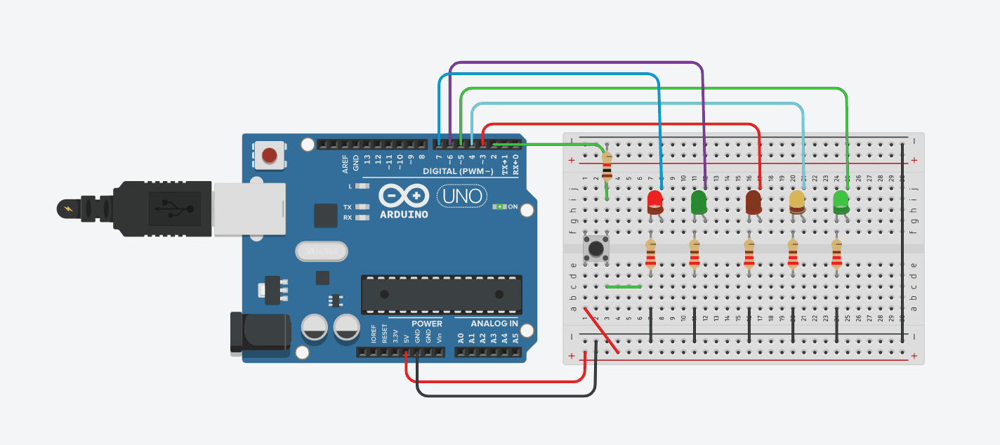
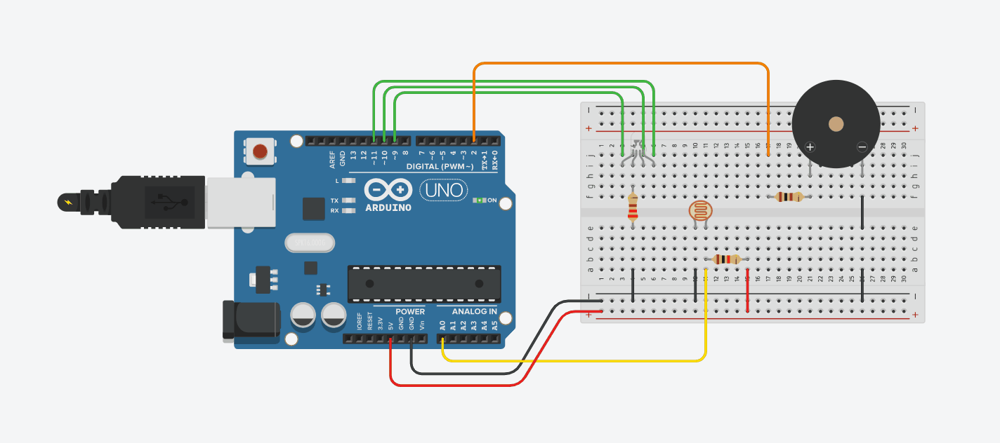
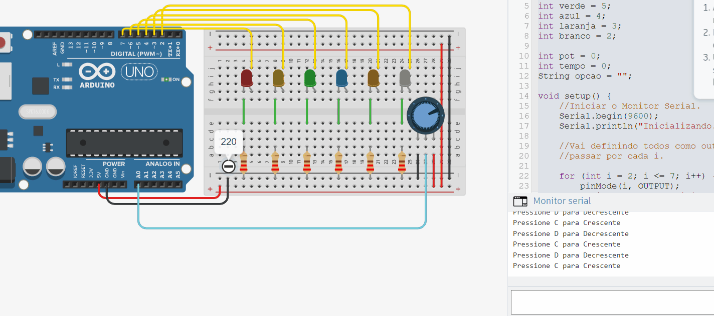

Industrial Automation
Professor: Gabriel


Pedestrian traffic light
This code controls a traffic light with a pedestrian crossing button using Arduino. In the setup function, the pins are configured, and an interrupt for the button is set up.
loop function alternates between green (5s), yellow (3s), and red (5s), with the pedestrian red light flashing. The crossing function is triggered by the button, restarting the cycle with shorter times.
Warehouse automation
This Arduino code controls the warehouse lighting using a light sensor, RGB LEDs, and a buzzer. Depending on the detected light level, it activates a green, yellow, or red LED. The buzzer sounds when there's a change in the light level.
Corrections were made to ensure actions occur only when changing levels, avoiding unnecessary repetitions.
Serial monitor class
This Arduino code controls the sequential lighting of LEDs in different colors. A potentiometer adjusts the sequence speed. The user chooses between an ascending or descending sequence via serial input.
The LEDs are activated according to the selected option, lighting up in either ascending or descending order as specified. The program uses serial communication to interact with the user and control the LED output.